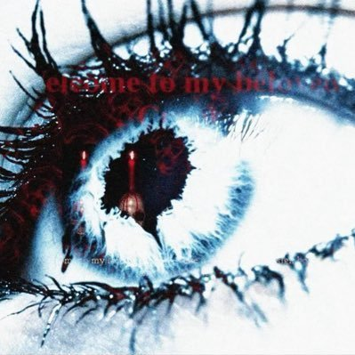

Nutilité
@Prechaska
@lin_dialog 删减太多了，原作后半部分更是直接没了，如果感兴趣的话可以直接读读看原作小说的英文版 zoo station _(:3 」∠ )_

竹霖
@lin_dialog
堕落街观影报告：长镜头居多的电影，有种纪录片的味道。整部剧全部为了剧情服务，很不符合逻辑，不过我看的时候也没法思考逻辑了…药效中看还不错，清醒后完全难看 又臭又长。
综合一下，我只能给两颗星 🌟🌟/ / /